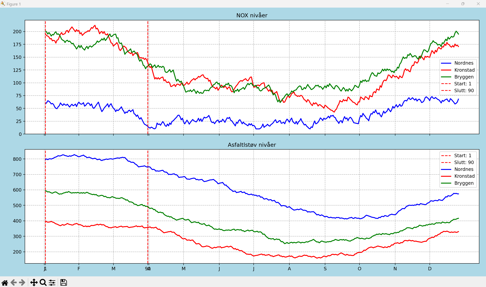
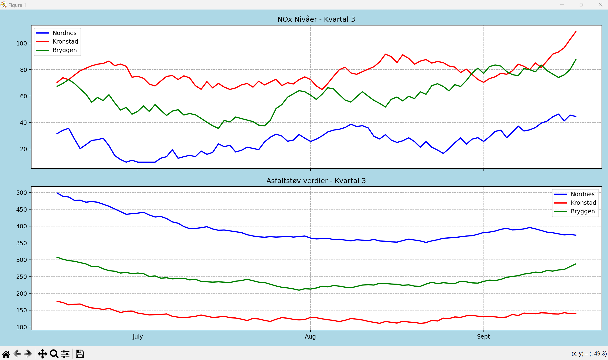

Bilder av programmet, Kvartal 3 og intervall fra 1-90 i året:


Brukerveiledning:
Når programmet kjøres får du opp mulighet til å taste inn 5 valg:
1-4 er Kvartal i løpet av året
0 = Valgfri dato mellom 1-360 dager. Hvor start å slutt blir markert med en rød linje.
Y-aksen (vertikal) viser verdier av NOx/asfaltstøv, og X-aksen (horisontal) viser intervall som er valgt